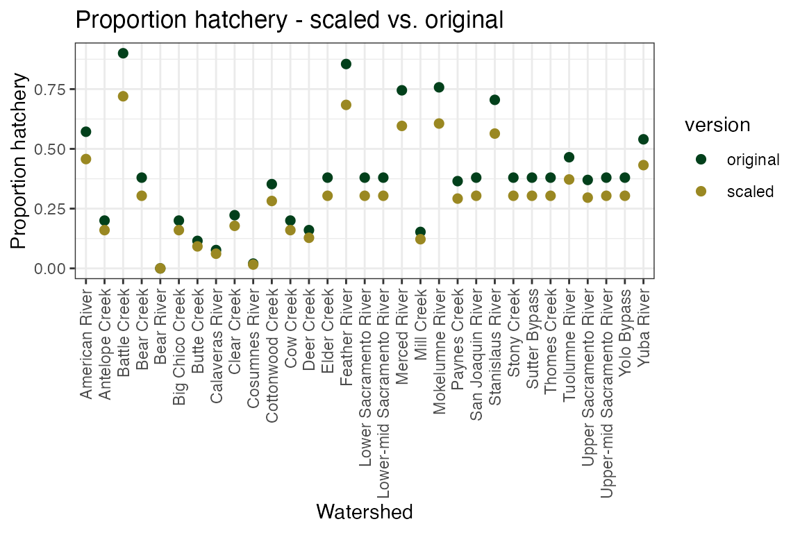

hatchery-actions.RmdThis document provides additional information about how hatchery actions are implemented in the fall run model for Reorienting to Recovery (R2R). For more more information about the model itself, including the codebase, please see our documentation.
There are 5 harvest actions that can be implemented in the model. Each has an associated number that is used to build a scenario in the R2Rscenarios package.
18: Baseline hatchery19: Only terminal hatchery / outplanting20: Phased hatcheries21: Release 50% in bay26: Install weir at hatcheryIf 18 is selected, baseline hatchery logic is used. This
is a year-structured data object that shows hatchery releases by year,
and numbers are based on current production targets California
Hatchery Scientific Review Group, 2012.
If 19 is selected, there are no in-river hatchery
releases in the model and instead “terminal” hatcheries are utilized,
which release hatchery fish at the entry to the ocean to support
commercial harvest. While there are many forms of potential outplanting
or terminal hatchery logic, this action assumes that juvenile salmonids
are imprinted to either a terminal hatchery or to ocean net pen release
sites and that there are low stray rates back into the model. This is
different than our current trucking outplanting approach which can have
high stray rates.
If 20 is selected, in-river hatchery releases are scaled
up by 500% in the first 5 years, and then
scaled down by 60% from years 6:10, and then
set to 0 for the last 10 years of the model as
terminal hatcheries are utilized instead. This is a year-structured data
object that shows hatchery releases by year, and baseline numbers are
based on current production numbers California
Hatchery Scientific Review Group, 2012 before being scaled up.
If 21 is selected, the parameter
hatchery_release_proportion_bay is set to 0.5,
which tells you which proportion of the releases are in-river
vs. released at Chipps.
If 26 is selected, the model will scale down
proportion_hatchery for each watershed by 20%
to approximate the effect of installing a weir at the hatchery.
Installations of weirs have been shown to reduce proportion of hatchery
fish on spawning grounds, or pHOS, by anywhere from 1% - 48% on
different watersheds Wilson
et. al, 2019, but can be as high as 75% Wilson
& Buehrens, 2023.
